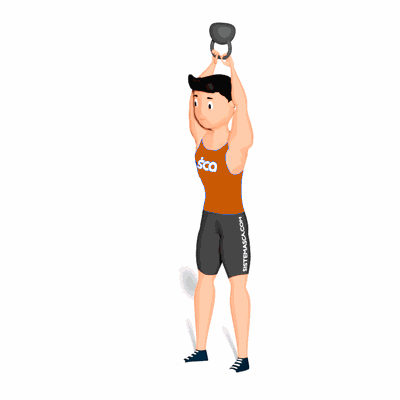

American Swing

É um exercício de flexão com uma rápida e forte extensão de quadril. Esse exercício é essencial para fortalecimento da coluna vertebral, quadril, lombar e pelve. O swing com kettlebell proporciona uma ativação dos músculos posteriores da coxa, glúteo e eretores da coluna, sendo assim, é um movimento bem completo, proporcionando a estabilização do corpo.
Ficha Técnica
Tipo: Musculação
Grupo Muscular: Corpo
Aparelho: Nenhum
Músculos: Nenhum
Como realizar
- Segure um kettlebell com as duas mãos com uma pegada pronada e com os pés alinhados com os ombros;
- Flexione seus joelhos ligeiramente enquanto leva os quadris para trás;
- Mantenha o tórax erguido e abaixe o tronco até que esteja paralelo ao chão;
- Deixe o kettlebell "cair" e passar por entre as pernas, com os braços totalmente estendidos;
- Empurre os quadris para frente explosivamente, contraindo os glúteos;
- Deixe que o impulso mecânico desse movimento eleve o kettlebell para cima de sua cabeça até os braços ficarem estendidos sem utilizar a força muscular dos braços para realizar o movimento;
- Permita que o kettlebell balance novamente embaixo e repita o movimento.
 RC STORE
RC STORE